Population
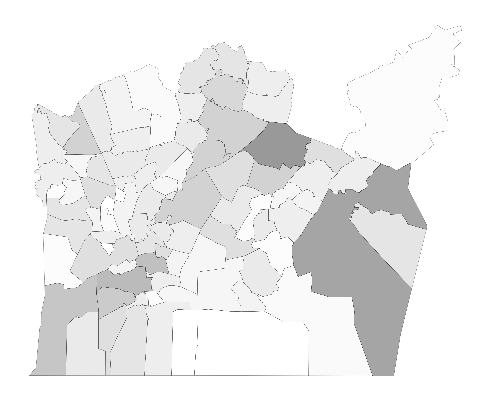
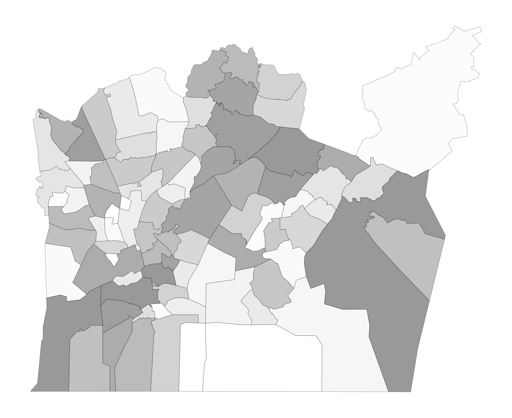
The following heatmaps present postal-code-level indicators using two different classification methods. The image on the left shows the equal interval version, while the image on the right displays the quantile version.
The visualizations include indicators related to residential buildings, dwellings, population, and other selected variables. Equal interval classification divides the complete data range into equally sized value intervals, while quantile classification places approximately the same number of postal-code areas into each class, making relative spatial differences easier to compare.


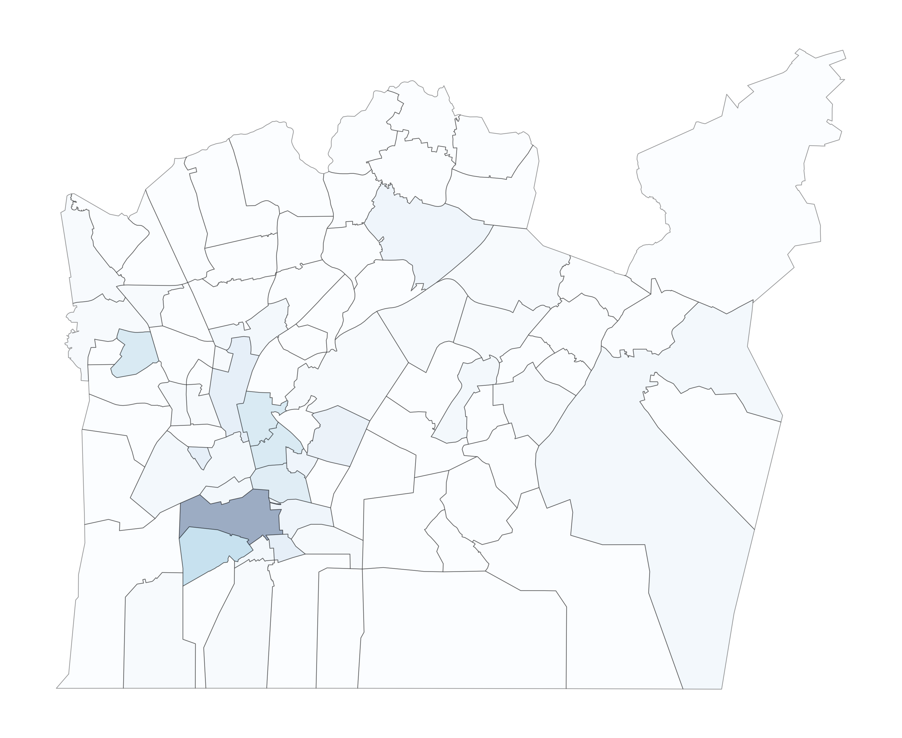
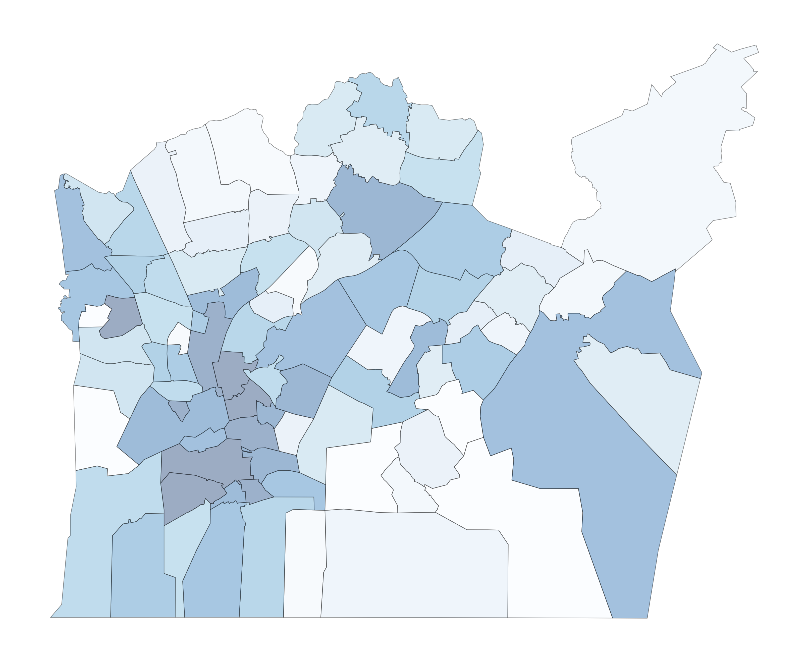
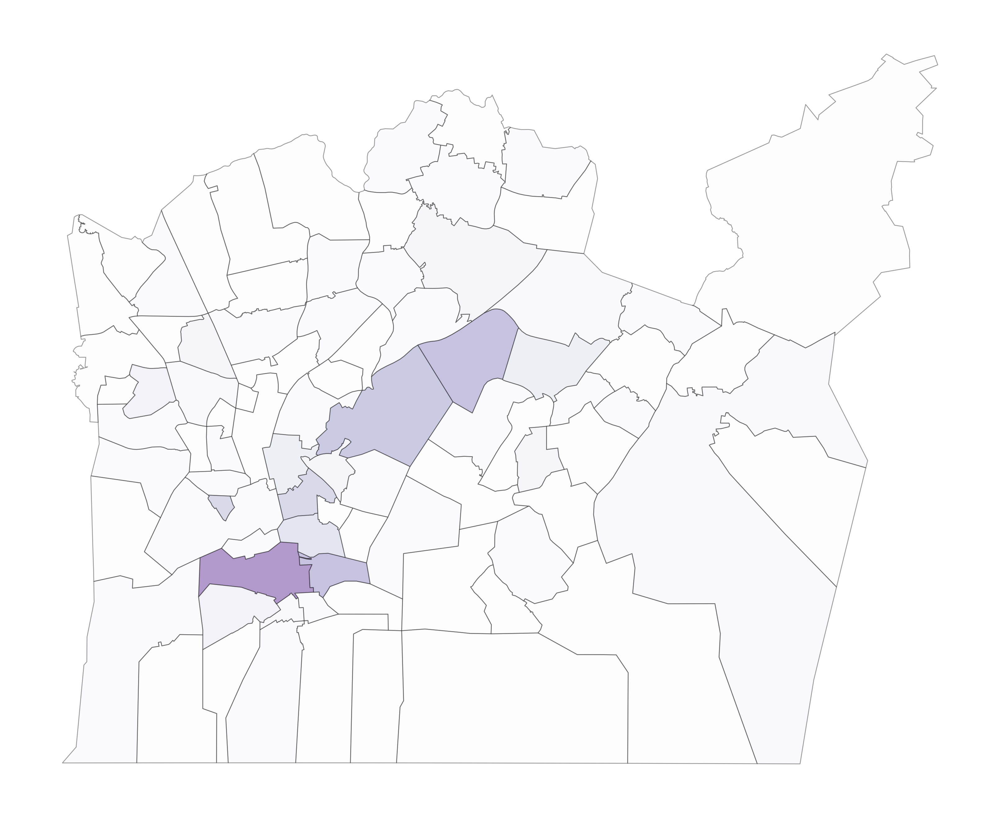
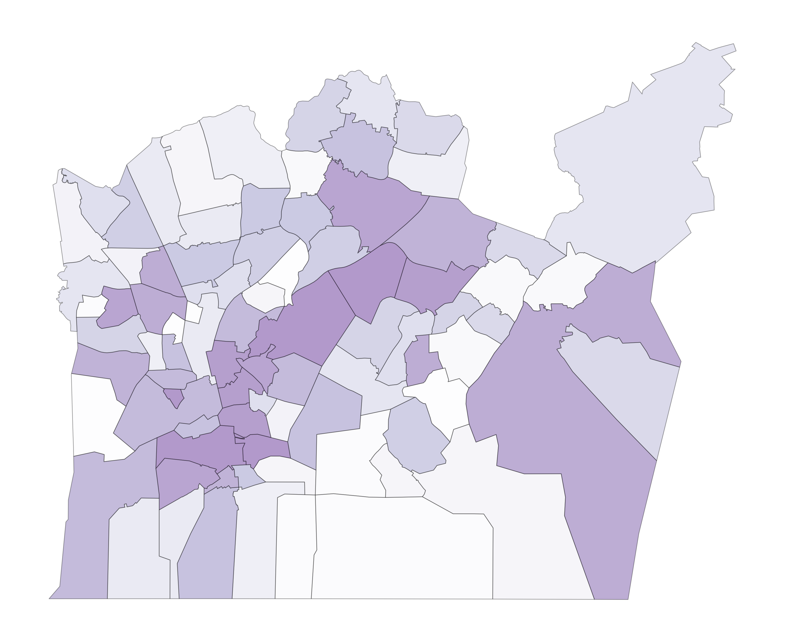
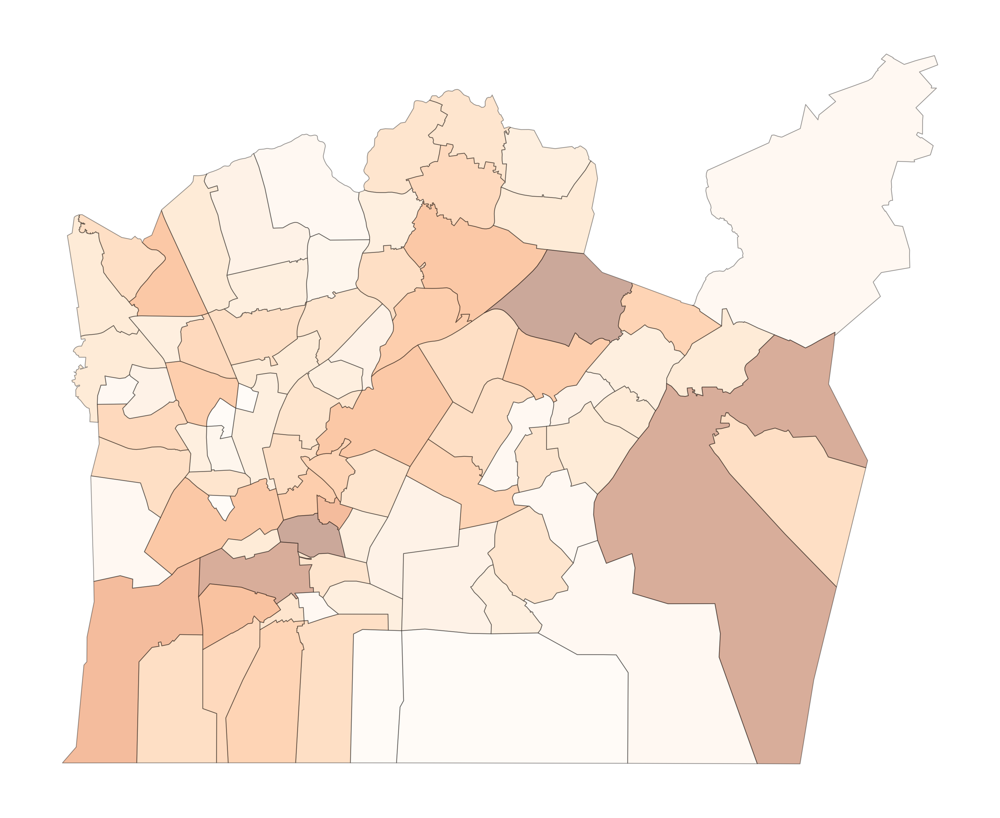
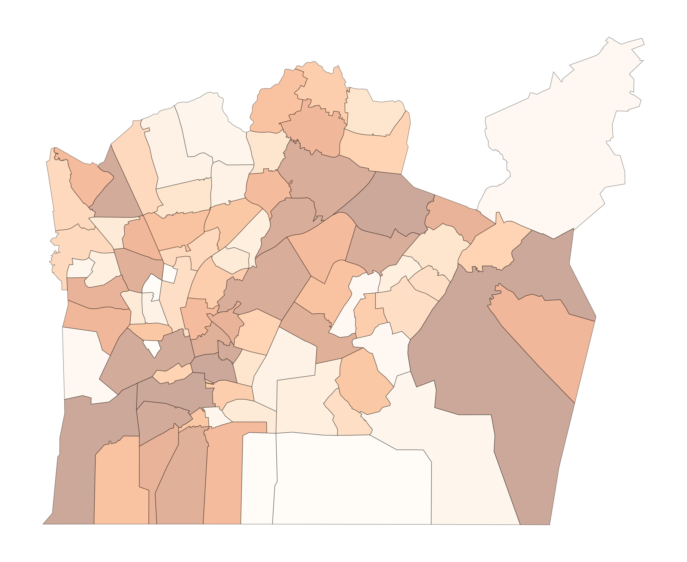
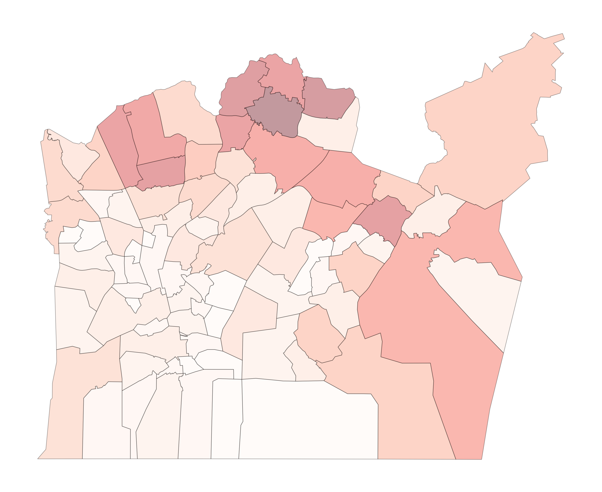
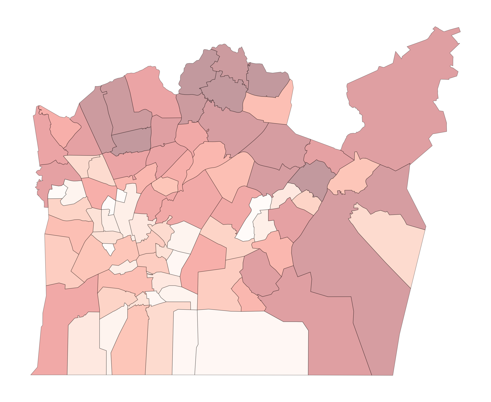
During the preparation of the median household income visualization, one postal-code area, 00230 Helsinki postikeskus (Helsinki), produced a significant outlier in the dataset. The area contains no dwellings as shown in the interactive version, which results in a recorded median household income value of zero.
Based on map interpretation, the area appears to consist primarily of railway-related infrastructure and surrounding green areas rather than residential land use. Because the zero value strongly distorted the data classification, especially in the equal interval version, the area was excluded from the final median income visualization. The excluded postal-code area is highlighted in red.
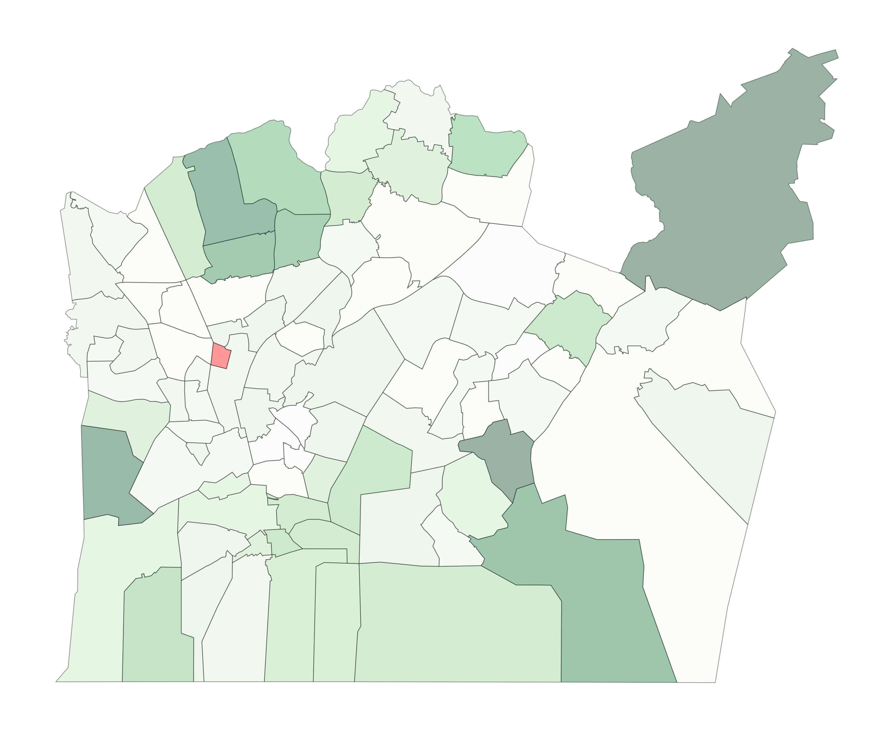
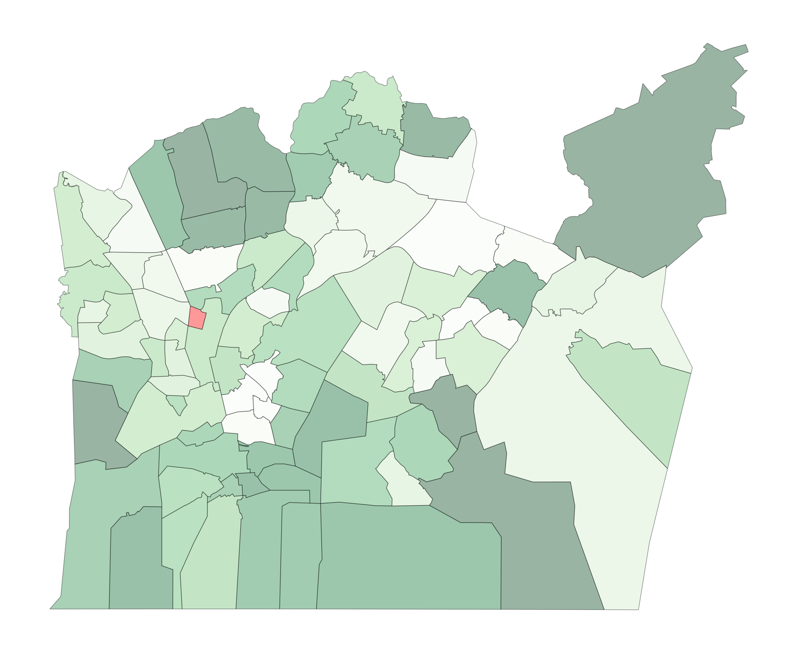